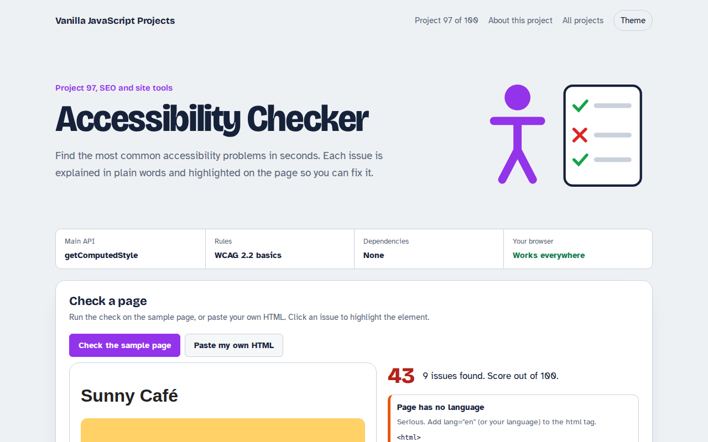

Home / SEO and Site Tools / Favicon Generator
Favicon Generator in JavaScript, Free with Live Demo
Free favicon generator in plain JavaScript. Make an icon from a letter or upload an image, preview it in a browser tab, download 16 to 512 pixel PNGs, and copy the HTML and manifest.

Runs on: Canvas 2D. Works in all modern browsers.
What is the Favicon Generator?
A favicon maker. Type one or two letters, choose colours and a shape, or upload a square picture, and see the icon in a pretend browser tab.
It makes six PNG sizes from 16 to 512 pixels for tabs, phones and app installs, and gives you the HTML link tags and a web manifest file.
Good for
- New websites and landing pages
- Web apps you want people to install
- Client projects that need a quick icon
- Replacing a blurry old favicon
What this project does
- Letter icons with colour and shape choice
- Upload your own square image
- Six PNG sizes with separate downloads
- Browser tab preview
- HTML tags and web manifest
How it works
- Draw once per sizeEach size is drawn fresh on its own canvas, not scaled down from a big one, so small icons stay crisp.
- Shapes with clipA rounded rectangle, circle or square clip is applied before drawing, so letters and photos fit the chosen shape.
- Code that goes with itThe tool writes the link tags for the head and a web manifest for phones and app installs.
The key JavaScript
This is the heart of the project. The full file has the rest, including the screen layout and error handling.
function icon(size, letter, bg, fg) {
const c = document.createElement("canvas");
c.width = c.height = size;
const x = c.getContext("2d");
x.beginPath(); x.roundRect(0, 0, size, size, size * 0.22); x.clip();
x.fillStyle = bg; x.fillRect(0, 0, size, size);
x.fillStyle = fg; x.textAlign = "center"; x.textBaseline = "middle";
x.font = `800 ${size * 0.62}px sans-serif`;
x.fillText(letter, size / 2, size / 2);
return c.toDataURL("image/png");
}How to use it
- Click Download HTML file above.
- Open the file in a code editor, like VS Code.
- Run it from a local server with
npx serve .so the camera, microphone and AI features are allowed. - Change the text and colors, then upload it to GitHub Pages, Netlify or your own site. It is one file with no build step.
Questions people ask
Do I still need a favicon.ico file?
Most browsers now use PNG icons from link tags. An .ico file in the site root is only a fallback for very old browsers.
Which sizes matter most?
32 pixels for browser tabs, 180 for iPhones and 192 and 512 for Android and installs.
What is a maskable icon?
An icon with extra padding so Android can crop it into circles or other shapes without cutting off the design.
More SEO and Site Tools projects

091. Meta Tag Generator
A form that writes your title, description and social tags with live search and share previews
092. OG Image Maker
A canvas tool that makes 1200 by 630 share images with your title and brand
093. Schema JSON-LD Builder
A form that writes structured data for businesses, products, articles, events and FAQs
095. Responsive Image Maker
A tool that resizes one photo into several sizes and writes the srcset code
096. Sitemap Generator
A tool that turns a list of pages into sitemap.xml and robots.txt